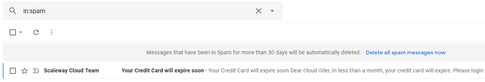

GMail´s spam detector failing?
For quite some time, I’ve been having lots of problems with GMail spam detector’s false positives.

Loads of legitimate mail going in spam folder. I’m glad I remembered to check the folder, because the above kind of mail is really fatal if you miss it (credit card expiration => service suspension => VMs going offline).
Lately these kinds of mail have gone to spam:
- eBay “Help us protect your account” mails
- Scaleway’s “your credit card is expiring soon”
- Hetzner “verify account” mail
- Newsletters from a Finnish retail company (still going to spam even when I consistently mark the false positives as “not spam”)
- Alerts from my monitoring system (though this is probably due to there being HTML as text which might seem suspicious)
Ugh, I don’t know the reason for this, but lately I’ve been becoming increasingly annoyed with what Google stands for. They seem to be less about “Don’t be evil” every passing day.
I’m dreaming of some day abandoning Google altogether and really owning my data.
Extra reading:

Thanks for reading! 😍
If you like my writing, consider following me on Twitter.
Stay updated on my blog posts & projects - sign up for
my newsletter. 🚀
No spam, unsubscribe any time.
RSS also available.